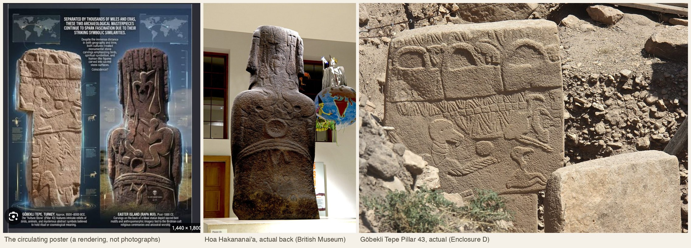

The pattern people see
Put the images side by side and the effect is real. An eagle-headed genie on an Assyrian palace wall holds a bucket; a figure on an Olmec boulder holds a bag; three handled shapes run across the top of a pillar carved eleven and a half thousand years ago in Turkey. A man in a bird costume rides a feathered serpent in a Mexican mural; men in bird costumes race for an egg on Easter Island; a bird-headed man lies beside a bison at Lascaux. The Greeks, the Incas, the Rapanui and the Jews each called their sacred centre the navel of the world. The stone giants of Göbekli Tepe and of Rapa Nui both fold their hands over the belly. And in Mesopotamia, Mexico and the Andes, a stranger arrives from the sea, teaches agriculture, laws and writing, and leaves.
The question is not whether these resemblances exist. They do. The question is what a resemblance is worth when it has been assembled from the whole of world art and world myth after the fact, by people looking for it. That is a question with a method, and the method is the same one applied on this site to the Indus and rongorongo scripts: find the closed inventory, count everything, and see whether the famous cases stand out from the ordinary ones. The sections below gather the material first. The tests come after.


Bird-men
A human with the head, wings or costume of a bird is among the oldest images people made and among the most widespread. The Lascaux shaft scene, about 17,000 years old, shows a stick-figure man with a bird's head and a bird on a staff beside a wounded bison; it is the only human figure in the cave and is usually read as a shaman or a dying hunter. At Nevalı Çori and Göbekli Tepe in south-east Turkey, 9,500 to 8,500 BCE, birds perch on human heads in totem-like sculptures and vultures dominate the carved pillars. At Çatalhöyük, around 7000 BCE, vultures with human legs swoop at headless bodies in wall paintings. Egypt gave falcon-headed Horus, ibis-headed Thoth, and the ba, the soul as a human-headed bird. Assyria carved eagle-headed winged genii at palace doorways, and the Hindu-Buddhist world Garuda, the eagle-man who carries Vishnu.
In the Americas the theme arises again with no plausible bridge. The Cacaxtla Bird Man mural, about 700 CE, shows a lord in a bird costume standing on a feathered serpent. The Mississippian Birdman of the American Midwest, 1000 to 1400 CE, appears on the Cahokia tablet and on the Rogan and Wulfing copper plates as a falcon-costumed dancer with a forked eye, tied to the hero Red Horn and to the Morning Star. And on Rapa Nui, from about 1680 until missionaries ended it in 1866, the tangata manu competition sent men swimming to Motu Nui for the first sooty-tern egg of spring, the winner ruling for a year as the birdman under the god Makemake. Hundreds of birdman petroglyphs cover the rocks at Orongo, and two of them were carved onto the back of the statue now in the British Museum.
Among the world's myths the pattern is the same. In the Berezkin catalogue, stories of people who are, become or marry birds occur in 55% of 926 documented traditions (map). Bird costumes and bird transformation are stock elements of Siberian and North American shamanism, which is the reason the Lascaux figure is read as it is. The bird-man is not rare enough to be evidence of anything by itself.


The handbags
The "handbag of the gods" is the single most shared image in this whole complex, and it is built from four objects. At the top of Pillar 43 at Göbekli Tepe run three arched shapes over rectangles, each with a small animal beside it. On the Assyrian reliefs the winged and eagle-headed genii carry a bucket in one hand and a cone in the other. From the Halil Rud valley near Jiroft in Iran come dozens of chlorite objects shaped exactly like a handbag, carved with heroes, snakes and eagles, about 2500 BCE. And on La Venta Monument 19 the seated Olmec figure holds a small handled pouch.
Graham Hancock's reading, in Magicians of the Gods (2015), is that the bag is a badge of office carried by the civilising agents of a lost Ice Age culture, and that its appearance at Göbekli Tepe, in Assyria and in Mexico marks their passage. The archaeologists' readings are specific and unglamorous. The Assyrian object is named in ritual texts: the banduddû, a bucket, and the mullilu, a purifier, used to sprinkle water in a rite that protected doorways; the genii who carry them stand at doors because texts prescribe such figures to block the entry of the enemy into a house. The Jiroft objects are the one class that are genuinely bag-shaped, and wear analysis by Vidale and Micheli shows heavy polish on the handle and along the contour, consistent with an object hung on a cord and rubbed for years; they are usually catalogued as weights or handled stones of uncertain use. The Olmec pouch is generally taken as a bag for copal incense. The three shapes on Pillar 43 are, in the excavators' words, of uncertain function; they have suggested they may be the enclosures themselves seen from the side.
Two things are worth holding onto. First, a container with a handle is the simplest object a person carries, and drawn in profile every such container is a rectangle with an arc on top. The design space is tiny. Second, only one of the four is a bag, and the other three are identified by their own cultures' texts or contexts as something else. The resemblance is between drawings, not between things.


The navel of the world
Delphi kept an omphalos, a navel stone, in the sanctuary of Apollo, at the spot where two eagles released by Zeus from the ends of the earth were said to have met. Jerusalem's Temple Mount is the navel of the earth in Ezekiel and in medieval maps. The Incas' capital, Cusco, is glossed as "navel" in Garcilaso de la Vega's Royal Commentaries of 1609, though Quechua scholars dispute the etymology and an older reading gives "owl-stone." The Rapanui name for their island, Te Pito o te Henua, is usually translated "navel of the world," but pito also means end, and "the end of the land" is equally possible for the most remote inhabited place on earth. On the island's north coast an 80-centimetre spherical stone, Te Pito Kura, "navel of light," is said in a modern telling to have been brought by the founding king Hotu Matu'a from the homeland Hiva; it is iron-rich, warms in the sun, and deflects a compass. And Göbekli Tepe means "potbelly hill" or "navel hill" in Turkish, a farmers' name for the mound's rounded profile, with no connection to what anyone called the place in 9500 BCE.
To these one can add Mount Meru, Mount Kailash, Kunlun, Uluru, the Kaaba, Chiang Rai, and China itself, the Middle Kingdom. Mircea Eliade built a theory on this in the 1950s: every inhabited world has a centre, an axis mundi where sky, earth and underworld meet, and communities name and build it. His critics find the theory too universal to be falsifiable, but as a description of a habit it holds. Calling your holy place the centre of the world is what holy places are for. Two cultures doing it is not a coincidence any more than two cultures having a word for "here."


Hands on the belly
The central pillars of Enclosure D at Göbekli Tepe are people. Arms run down their flanks, hands with long fingers meet above a belt on the front, a fox pelt hangs as a loincloth. The Urfa Man, a life-size limestone statue from the same region and age, holds both hands over his genitals; the newly found Karahan Tepe figure grips his phallus with both hands. On Rapa Nui, the moai fold their long-fingered hands across the abdomen just above a carved belt, and the same pose is standard in Marquesan and other Polynesian tiki, where the belly is said to hold genealogy and ritual knowledge. The Ponce monolith at Tiwanaku holds its objects to its chest. Hancock and Hugh Newman call this the "navel-bracing posture" and list Turkey, Costa Rica, Indonesia and Easter Island.
The plain explanation is that a standing figure carved from a block has nowhere else to put its arms. Arms that hang free would have to be cut away from the body, which is difficult and fragile; arms folded to the front stay inside the stone. Where the hands end up, at chest, belly or groin, is then a matter of proportion and local convention. That is why the posture is found in Neolithic Anatolia, Iron Age Sardinia, Bronze Age Iberia, Polynesia and Costa Rica alike. It is a constraint of the medium before it is a symbol, and any test of the symbol has to control for the medium.


Serpents, and the feathered serpent
Snakes wind through Pillar 43 and through half the pillars at Göbekli Tepe; they flank the hero on the Jiroft bag; a serpent rises behind the seated man at La Venta, with a feather crest that makes it the oldest known ancestor of Quetzalcoatl, the Feathered Serpent of Teotihuacan, Tula and the Aztecs, and of Kukulkan among the Maya. In the Old World the serpent is Apophis and the uraeus in Egypt, Tiamat and the mušḫuššu dragon in Mesopotamia, the Rainbow Serpent in Australia, the Midgard serpent, the Chinese dragon.
The catalogue numbers again say how ordinary this is. Cosmic serpents, meaning serpents that hold up the sky, arch as the rainbow, carry the earth, or are the Milky Way, appear in 37% of documented traditions, and their distribution is less geographically clustered than a random motif of the same frequency (study 2). That is the statistical signature of a thing invented independently wherever there are snakes and rainbows. The feathered serpent specifically, a serpent joined to a bird, is a Mesoamerican compound with a continuous 2,500-year local history, and it has no counterpart on the Assyrian or Anatolian side of the comparison.


The people who brought the arts
Behind the pictures stands a story, and it is the story that does the persuading. A stranger, often from the sea, often bearded, teaches a people agriculture, building, law and writing, and then departs, promising or not promising to return. The Babylonian priest Berossus, writing in Greek around 280 BCE, told it of Oannes: a being with the body of a fish, a second, human head beneath the fish's head, and human feet, who came out of the Persian Gulf in the first year of the world, spent his days among men without eating, and "gave them an insight into letters and sciences, and every kind of art; taught them to construct houses, to found temples, to compile laws, and explained to them the principles of geometrical knowledge," returning to the sea each sunset. Behind Oannes stand the seven apkallu, the antediluvian sages of Sumerian and Akkadian tradition, servants of the wisdom god Ea, whose fish-cloaked images are the ones actually named in texts. Hancock, and Zecharia Sitchin before him, take Berossus literally and make the sages the survivors of a drowned world.
Every literate region has a version. Egypt credited Osiris with teaching agriculture and law and Thoth with inventing writing; Greece had Prometheus bring fire and Cadmus letters; China's Three Sovereigns, Fuxi, Nüwa and Shennong, and the Yellow Emperor and his minister Cangjie account between them for fishing, marriage, farming, medicine, silk, the calendar and script. In the Andes, Viracocha rose from Lake Titicaca, made humans from stone, wandered as a beggar teaching them, and walked away across the Pacific. In Mesoamerica, Quetzalcoatl gave maize, the calendar and books and departed eastward over the sea. Among the Muisca of Colombia, Bochica came from the east, taught weaving and law, and opened the Tequendama falls to drain a flood. On Rapa Nui, Hotu Matu'a sailed from Hiva with the founding families. The type is so common that folklorists have a name for it, the culture hero, and Berezkin's catalogue codes its variants, from fire-theft to the origin of maize, across every continent.
Two specific claims attached to the American versions have been examined closely and have not survived. The white, bearded Viracocha and Quetzalcoatl are first described that way by Spanish chroniclers, Cieza de León in 1553 and López de Gómara in 1552, a generation after the conquest; Camilla Townsend and Matthew Restall have shown that there is no pre-conquest evidence that the Mexica took Cortés for a returning god, and that the "returning white god" was a Spanish narrative that served Spanish purposes. Juan Cobo Betancourt's 2024 study of Bochica traces the same expansion from a 1563 mention of "an idol" to the full civilising hero of a 1688 chronicle. Thor Heyerdahl's 1947 Kon-Tiki voyage was built on the bearded-Viracocha story and on the idea that white culture-bearers settled Polynesia from Peru; the genetics of Rapa Nui and of Polynesia generally show Polynesian ancestry, with a small and real Native American admixture around 1150 to 1200 CE that runs the other way from Heyerdahl's story. What is left, once the colonial layer is peeled away, is still a widespread culture-hero type, which is interesting on its own terms and is exactly what the second study on this site counts.
| Figure | Where | Came from | Taught | Left | Earliest source |
|---|---|---|---|---|---|
| Oannes and the seven sages | Sumer, Babylon | The sea (Persian Gulf) | Letters, sciences, arts, houses, temples, laws, geometry, seeds | Into the sea each night; the sages before the Flood | Berossus c. 280 BCE, after Sumerian and Akkadian apkallu texts |
| Osiris, Thoth | Egypt | Divine | Agriculture, law; writing, measure | Osiris killed and made king of the dead | Pyramid Texts c. 2400 BCE; Diodorus 1st c. BCE |
| Prometheus, Cadmus | Greece | Titan; Phoenicia | Fire and crafts; the alphabet | Bound; founded Thebes | Hesiod c. 700 BCE; Herodotus |
| Fuxi, Shennong, Huangdi, Cangjie | China | Sovereigns | Fishing, trigrams, marriage; farming, medicine; silk, calendar; script | Reigned and died | Zhou and Han texts, 1st millennium BCE |
| Viracocha | Andes | Lake Titicaca; Tiwanaku | Civilisation, order, miracles | Walked west across the sea | Betanzos 1551, Cieza de León 1553, Sarmiento 1572 |
| Quetzalcoatl, Kukulkan | Mesoamerica | Tollan; the east | Maize, calendar, books, crafts | East across the sea on a raft of serpents | Codices and Sahagún, 16th c.; feathered serpent from 900 BCE |
| Bochica | Muisca, Colombia | The east | Weaving, agriculture, law | Into a cave at Toya | 1563 record; Piedrahita 1688 |
| Hotu Matu'a | Rapa Nui | Hiva, by canoe | Settlement, the founding lineages | Died on the island | Oral tradition recorded 1880s–1930s |


Two accounts of the same material
The lost-source account
- Lineage. Ignatius Donnelly's Atlantis (1882); Grafton Elliot Smith's "heliolithic" theory that all civilisation spread from Egypt (1911–1930s); Thor Heyerdahl's Kon-Tiki (1947); Erich von Däniken's astronaut gods (1968); Zecharia Sitchin's Anunnaki (1976); Graham Hancock's Fingerprints of the Gods (1995), Magicians of the Gods (2015), America Before (2019) and Netflix's Ancient Apocalypse (2022–24).
- The thesis, in Hancock's current form. A sophisticated civilisation existed before the end of the Ice Age and was destroyed by a comet impact that began the Younger Dryas about 12,800 years ago. Survivors seeded Göbekli Tepe, and their memory survives as Oannes, Viracocha and Quetzalcoatl. The handbag is their badge; the navel sites are their centres; the folded hands and the bird-men are their signature.
- The astronomical reading. Martin Sweatman and Dimitrios Tsikritsis (2017) read Pillar 43 as a star map recording the impact date, with the vulture as Sagittarius, the scorpion as Scorpius and the disc as the sun.
- Its strength. It takes the resemblances seriously, it is vivid, and it names testable things: dates, a catastrophe, a path.
- Its weakness. Every element is chosen after the fact from all of world art and myth, definitions stretch to fit (a bucket, a weight and a pouch become one bag), and the dated chain has gaps of thousands of years and thousands of miles with nothing in between. The Younger Dryas impact hypothesis has failed repeated tests of its physical evidence. When Flint Dibble put the archaeological record to Hancock on the Joe Rogan show in 2024, the absence of any material trace of the civilisation was the whole four hours.
The scholarly account
- Specific identifications. The bucket and cone are the banduddû and mullilu of Assyrian purification rites. The Jiroft objects are handled chlorite weights worn from suspension. Pillar 43 is, to its excavators, a narrative relief of the early Neolithic death cult, its headless man phallic and therefore not simply dead, its top objects of unknown use; the constellation reading was rejected by the excavation team because it selects some animals and ignores others and assumes constellations 6,000 years before the earliest known ones. Hoa Hakananai'a's back carvings were added centuries after the statue was made, during the Orongo birdman cult, and every element on it, birdmen, tern, komari, paddles, is accounted for by that cult's own ethnography.
- Convergence and the body. Birds fly to the sky, snakes come from the ground, handled containers are the simplest thing to carry, a block-carved figure folds its arms. Cognitive science of religion and Eliade's centre-of-the-world habit explain why these recur without anyone travelling.
- Deep transmission where it can be shown. Mainstream scholarship does not deny that myths travel over enormous distances and times. Yuri Berezkin's catalogue shows motif distributions that follow the peopling of the Americas from Siberia; Julien d'Huy's phylogenetic reconstructions trace the Cosmic Hunt and Polyphemus tales to the Palaeolithic; Michael Witzel's Origins of the World's Mythologies (2012) argues, controversially, for a "Laurasian" story-line 40,000 years old. These are claims about hunter-gatherer migration, tested against inventories, not about a lost civilisation.
- The colonial layer. Restall, Townsend and Cobo Betancourt show that the bearded white civiliser of the Americas is a 16th- and 17th-century Spanish construction.
- Its weakness. It has rarely bothered to count. "Everyone has bird-men" is true, but until the second study on this site nobody had put a number on it, and the dismissal by assertion is part of why the other account thrives.
What can be tested, and what has been
A resemblance becomes evidence only when it is measured against a fair null: everything that could have been compared, compared the same way, so that the famous pair can be ranked among the ordinary ones. That needs a closed inventory. Where one exists, the test can be run today. Where none exists, it has to be built first. The three studies on this site follow that rule.
Indus and rongorongo
Do the Indus script and Easter Island's rongorongo share more sign shapes than two unrelated scripts do? Both complete catalogues were digitised (417 and 604 signs), 22 control scripts rendered, every sign reduced to a skeleton, and every script pair scored the same way.
The myths
Do bird-people, cosmic-serpent and world-centre myths cluster in the named cultures beyond chance and beyond geography? Tested on the Berezkin catalogue: 926 traditions, 2,138 motifs, with maps.
The pictures
Is the back of Hoa Hakananai'a unusually like Pillar 43? Five vision models (Claude Opus 5 and Sonnet 5, GPT-5.5, Gemini 3.1 Pro, Grok 4.6) judged blind: pairs scored side by side against 1,500 random foreign pairs, and lineups of one target and ten candidates, with decoys matched on object type and backgrounds removed.
Study 3: putting the pictures under test
The strongest single image in the whole complex is the pairing of Göbekli Tepe's Pillar 43 with the carved back of the moai Hoa Hakananai'a: two decorated stone slabs, 11,000 years and half a planet apart, both with birds, a disc or ring, a band, and figures. It is also the case most worth testing properly, because it cannot be dismissed by pointing at a base rate. Nobody has counted decorated monoliths.
Step one: what were we looking at?
The poster that circulates is not two photographs. It is a rendering. Set beside the British Museum's photographs of the real statue and the excavation photograph of the real pillar, the moai's back in the poster has a single large figure with raised arms that is not on the stone. The real back, documented by the 2014 photogrammetry study (Pitts, Miles, Pagi and Earl), carries two facing birdmen with a small sooty tern between their beaks, a ring above the girdle, komari, and paddles on the ears, all added to a much older statue during the Orongo cult. The real pillar carries three arched objects with small animals, a band of V-shapes, a vulture with a disc, a scorpion, snakes, other birds and a headless ithyphallic man. Some correspondences survive the switch from poster to object: birds high on both, a circle on both, a horizontal band on both. Others do not: the raised-arm figure, the "matching" bird poses, the shared vertical layout of the poster's version.

Three pilots have now been run. Their results, every judgment and every lineup, are on the study 3 page. The short version: feature coding (pilot A) failed because two blind coders could not agree on the features that matter; direct blind scoring by three models (pilot B) puts the pair at about 3 of 10, inside the ordinary range for unrelated panels; and blind lineups (pilot C), once the decoys were matched on object type and the backgrounds removed, never ranked the moai closest to Pillar 43 in 116 attempts, while a same-tradition monolith is picked out half the time. The first round of lineups had said otherwise, and the judges' reasons showed why: two carved standing stones in a crowd of wall reliefs. That correction is the most useful thing the pilots produced.
Step two: the closed inventory of compositions
The design follows the two finished studies. Fixed sample: every published relief pillar from Göbekli Tepe and the Taş Tepeler sites, not just Pillar 43; every recorded Rapa Nui birdman surface, meaning the Orongo petroglyph corpus catalogued by Georgia Lee and the few moai with back carvings; and, chosen before coding, complete bird-heavy relief or painting corpora from fifteen to twenty unrelated traditions: Çatalhöyük and Nevalı Çori, Egyptian stelae, Assyrian genie panels, Izapa and Moche, Nazca textiles, Northwest Coast crest art, Scandinavian picture stones, Shang bronzes, Aboriginal rock art, and the Mississippian Birdman plates, an independent birdman tradition with well-documented local meaning that shows what convergence looks like.
Fixed feature list, written before coding: not just what is present but how it is arranged. Number of registers; vertical order of classes (bird, human, hybrid, reptile, disc, container, geometric band); facing pairs and bilateral symmetry; disc present and where; bird posture; hybrid type (bird-headed human versus bird with human limbs); position and size of the anthropomorph; container-shaped objects and their position. Blind coding by two or three vision models and a human subset, with any feature scoring below 0.67 inter-coder agreement dropped before analysis.
The right null. The moai was chosen as Pillar 43's match from all of world art, so the question is not how similar these two are but how similar any panel is to its best match in an unrelated culture. Compute compositional distance for every cross-culture pair, take each panel's nearest foreign neighbour, and see where Pillar 43 and Hoa Hakananai'a fall in that distribution. Report Pillar 43's actual nearest neighbours as well; if they are other Göbekli pillars, then Çatalhöyük, then Egypt, that is informative on its own.
Predictions, so the test can lose. Ours: at least half the poster's correspondences vanish against the real objects (already true); Pillar 43's nearest neighbour outside Anatolia is not on Rapa Nui; the pair sits inside the central 90% of nearest-neighbour similarities; and every element on the moai's back is accounted for by Orongo ethnography without an external source. The other side's win condition: the pair in the top 5%, driven by arbitrary features, meaning identical register order, the same handle-shaped objects across the top of both real panels, or a facing-bird-and-disc configuration, and not by "birds up, snakes down," which is near-universal vertical cosmology. If that happens it is news, and this site will say so.
What would make this a strong test rather than a merely fair one is the same thing that made the first study strong: a positive control. Related relief traditions with documented descent, Assyrian to Achaemenid, Olmec to Maya, Chavín to Moche, must come out as neighbours before the method's verdict on the disputed pair is trusted.
Sources
Objects and sites
- Pitts, M., Miles, J., Pagi, H. & Earl, G. (2014). Hoa Hakananai'a: a new study of an Easter Island statue in the British Museum. Antiquaries Journal 94. Cambridge Core.
- Notroff, J. et al. Of animals and a headless man: Göbekli Tepe, Pillar 43. Tepe Telegrams, 2016; and More than a vulture: a response to Sweatman and Tsikritsis, 2017.
- Sweatman, M. & Tsikritsis, D. (2017). Decoding Göbekli Tepe with archaeoastronomy. Mediterranean Archaeology and Archaeometry 17(1).
- Vidale, M. & Micheli, R. The function of a chlorite hand-bag of the Halil Rud civilization as inferred from its wear traces. Iranian Journal of Archaeological Studies. link.
- Lee, G. (1992). The Rock Art of Easter Island: Symbols of Power, Prayers to the Gods. UCLA.
- Wikipedia and Wikimedia Commons entries for Göbekli Tepe, Hoa Hakananai'a, Apkallu, La Venta, Cacaxtla, Etowah plates, Omphalos, Tangata manu, Axis mundi, Hyperdiffusionism, White gods (accessed September 2026).
- Ahu Te Pito Kura: Imagina Rapa Nui.
Myths and their history
- Berossus, Babyloniaca, as preserved by Alexander Polyhistor and Eusebius (the Oannes passage).
- Townsend, C. (2003). Burying the White Gods: new perspectives on the conquest of Mexico. American Historical Review 108(3).
- Restall, M. (2003). Seven Myths of the Spanish Conquest. Oxford.
- Cobo Betancourt, J. F. (2024), on Bochica and colonial reinterpretation.
- Berezkin, Yu. E. & Duvakin, E. N. Thematic classification and areal distribution of folklore-mythological motifs. ruthenia.ru.
- d'Huy, J. (2016). Scientists trace society's myths to primordial origins. Scientific American, December 2016.
- Witzel, E. J. M. (2012). The Origins of the World's Mythologies. Oxford.
- Eliade, M. (1959). The Sacred and the Profane.
The lost-source account and its critics
- Hancock, G. (2015). Magicians of the Gods. Coronet. (Handbags as badge of office; Göbekli Tepe and Easter Island; navel sites.)
- Newman, H. Megalithic origins: ancient connections between Göbekli Tepe and Peru. grahamhancock.com.
- Heyerdahl, T. (1952). American Indians in the Pacific.
- Sitchin, Z. (1976). The 12th Planet.
- Elliot Smith, G. (1923). The Ancient Egyptians and the Origin of Civilization.
- Dibble, F. & Hancock, G., Joe Rogan Experience #2136, April 2024; summaries at Archaeology Southwest.
- Ioannidis, A. G. et al. (2020). Native American gene flow into Polynesia predating Easter Island settlement. Nature 583.
- Fehren-Schmitz, L. et al. (2017). Genetic ancestry of Rapanui before and after European contact. Current Biology 27.
- Holliday, V. T. et al. (2023). Comprehensive refutation of the Younger Dryas impact hypothesis. Earth-Science Reviews 247.
- Timeline Auctions, The handbag that wasn't: the truth about the "handbags of the gods". link.
Image credits
The tweet screenshots on the study pages are reproduced for commentary. All other images are from Wikimedia Commons under the licences listed, or public domain.